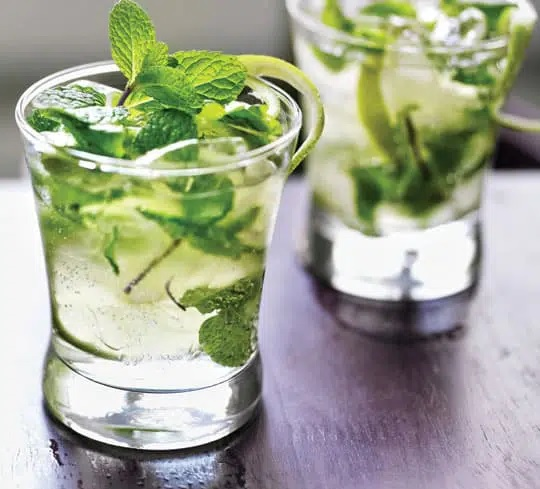

El mojitoes un cóctel popular originario de Cuba,
compuesto de ron, limón, azúcar, menta o eucalipto y agua mineral. La combinación de sabor dulce,
cítrico, y menta complementa el sabor del ron, y hace del mojito una bebida popular de verano.
INGREDIENTES:
- 16 hojas de menta o hierbabuena
- 1 oz de jugo de limón
- 1 cucharada de azúcar
- cantidad suficiente de hielo
- 2 oz de ron blanco
- ½ oz de jarabe natural
- cantidad suficiente de agua mineral
- 1 twist de limón
PREPARACIÓN:
- Coloque en el vaso old fashioned la mitad de las hojas de menta o hierbabuena,
el jugo de limón y el azúcar, macháquelos ligeramente con la mano de mortero.
- Agregue hielos, el ron blanco, el jarabe natural y las hojas de menta restantes;
mezcle muy bien con ayuda de la cuchara bailarina. Termine de llenar el vaso con
el agua mineral.
- Decore el mojito con el twist de limón.